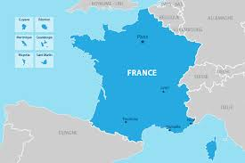
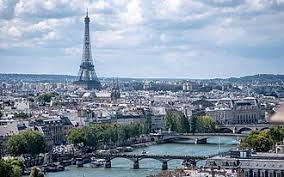
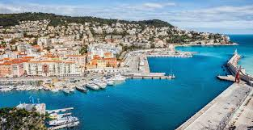
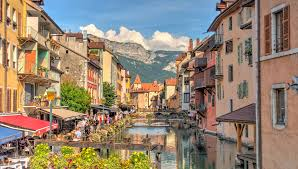
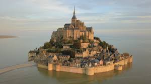
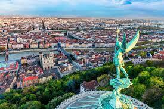
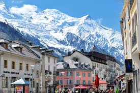

About This Website
I chose this topic because France has a lot of different travel experiences in one country. Some people may want a major city like Paris, while others may want beaches, mountain views, or historic locations. I wanted to make a page that shows a few of the best spots depending on the type of trip someone is interested in.
I thought this would be a good topic for a webpage because there are a lot of different places to include, and it gave me a chance to organize the information in a simple way.
Where Is France?

France is located in Western Europe and is known for its history, culture, food, landmarks, and natural beauty. Because it has such a wide range of destinations, it is a popular place for many different kinds of travelers.
Featured Places

Paris
Paris is the most famous city in France and is known for its landmarks, museums, shopping, and food. It is a strong choice for someone who wants the classic France experience.

Nice
Nice is a great destination for beaches, coastal views, and warm weather. It has a more relaxed atmosphere and would be a good place for someone who wants a trip by the water.

Annecy
Annecy is known for its canals, lake, and mountain scenery. It would be a great place for someone who likes nature but still wants a nice town to walk around in.

Mont Saint Michel
Mont Saint Michel is one of the most unique places in France because of its island setting and historic abbey. It stands out from the other destinations because of how dramatic it looks.

Lyon
Lyon is a good city for food, architecture, and culture. It offers a different city experience from Paris while still giving someone a major city to explore.

Chamonix
Chamonix is a great destination for mountain views, hiking, skiing, and outdoor activities. It would be a strong option for someone who enjoys nature and adventure.
How I Would Plan a Trip
-
First decide what kind of trip you want
- City trip: Paris or Lyon
- Beach trip: Nice
- Nature trip: Annecy or Chamonix
- Historic landmark trip: Mont Saint Michel
- Choose the time of year you want to travel.
- Pick whether you want more famous places or more scenic places.
- Try to combine a major city with a smaller destination.
Extra Travel Tips
If I were planning this trip, I would probably try to visit both a major city and a smaller scenic location. That would make the trip feel more balanced because France has a lot to offer beyond just one type of destination.
I would also try to use trains when possible because they make it easier to travel between major cities. For smaller destinations, it would help to plan ahead so there is enough time to actually enjoy each place instead of rushing through the trip.
Why France Is a Good Travel Destination
France stands out because it has famous cities, historic sites, beaches, mountain towns, and scenic lakes all in one country. That means a traveler can have very different experiences depending on where they go.
Another reason France is appealing is that it offers both world famous destinations and smaller places that still feel unique and memorable.
Helpful Travel Links
Travel Video
This video gives a better visual idea of what traveling in France can look like.